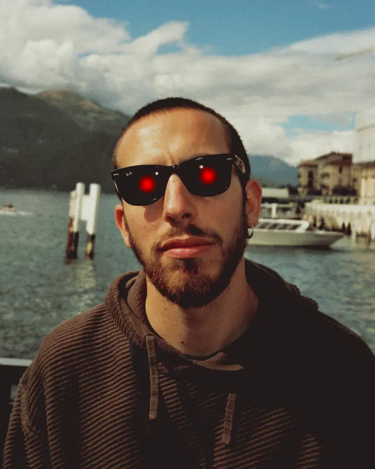

Systems.
I find where creative work slows down, then build the system that removes the wait. Brand foundations AI can read, production tools built on them, and Claude skills a small team runs on its own.
How I work
The brand goes in first. Then the AI.
AI gives generic results when it works from an open prompt. It gives on-brand, production-ready results when it works inside rules someone wrote down. Most of my work is writing those rules and building the tools around them.
- Find the bottleneckWork with the team to see where things wait: an agency queue, an approval loop, a template only one person can edit.
- Codify the brandTurn design decisions into tokens, components and written rules that people and Claude both follow.
- Build the toolClaude projects and skills, CMS modules, scripts. Then hand them to the people who need them.
- Fix the systemWhen an output is wrong, I update the rule that produced it, so the same mistake doesn't come back.
A flow I rebuilt
Website changes, from agency queue to in-house.
Every page fix used to go through an external agency. Now it stays inside the team, and the brand rules travel with the request.
What I build
Four kinds of system.
Case studies

Creative Technologist.
I work at the intersection of design, process and AI. I build the tools, workflows and systems that let creative teams move faster and produce better work.
I love onomatopoeias and futuristic literature.
I am fascinated by brilliant ideas,
but even more so by bringing them to life.
- Hand drawing
- Logos
- Websites
- Events
- AI
Open to roles where design craft meets process and AI: Creative Technologist, Design Technologist or hybrid creative-ops roles.
Get in touch at giacomo.annoni95@gmail.com or through LinkedIn.